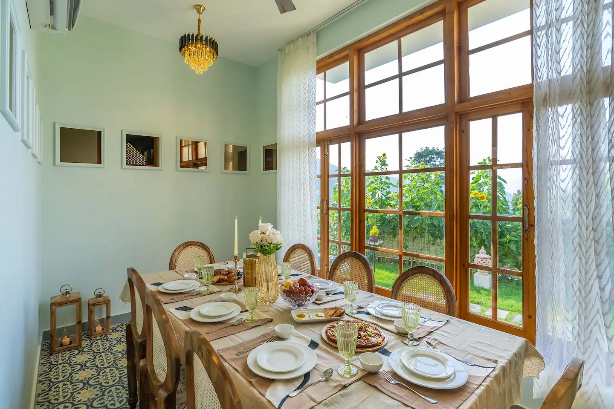

An eco lodge sells something a regular hotel cannot: the feeling of staying inside nature without harming it. That promise is made or broken by the architecture, long before the first guest arrives.
Interest in nature stays has grown fast in India, from wildlife lodges near tiger reserves to forest cottages in the hills and farm stays outside cities. Many properties now call themselves eco resorts. Far fewer are designed that way. A real eco lodge is shaped by its site, built largely from local materials, comfortable without heavy machinery, careful with water, energy and waste, and good for the people who live around it.
This guide explains how eco lodge architecture works in India: what defines an eco lodge, where it can be built, the rules that apply near protected areas, siting, materials, passive comfort, water and energy, community, how the same ideas apply to a larger low-impact resort, cost, and the mistakes that turn eco into greenwash. It draws on well-known Indian eco lodges and on the principles we apply to our own hill and nature sites, such as our concept master plan for a hill resort community in Mukteshwar.
What Makes a Lodge an Eco Lodge?
There is no single legal definition. One widely used description, quoted by Bluprint from the organisers of an ecolodge planning workshop, describes an ecolodge as a 5 to 75-room, low-impact, nature-based and financially sustainable accommodation that helps protect sensitive neighbouring areas, benefits local communities, offers guests an interpretive experience, and is planned, designed, built and operated in an environmentally and socially sensitive way.
In architectural terms, that comes down to a handful of tests:
- Small footprint. Few buildings, low density and most of the land left wild.
- Shaped by the site. Buildings follow the land, trees and water rather than clearing them.
- Local materials and skills. Earth, stone, timber, bamboo and local craftspeople wherever possible.
- Comfort through design. Shade, orientation, ventilation and thermal mass do most of the work, with machines as backup.
- Careful with resources. Rainwater, renewable energy, treated wastewater and waste handled on site.
- Good for neighbours. Local employment, local suppliers and respect for local culture.
Where Eco Lodges Work in India
- Near national parks and tiger reserves. Kanha, Tadoba, Pench, Bandhavgarh, Corbett and others, usually in the buffer areas outside the protected core.
- Forests and hills. The Himalayan foothills, the Western Ghats and the north-east, where guests come for walks, birds and views.
- Riversides and backwaters. Quiet water edges in Kerala, Karnataka, Goa and along Himalayan rivers.
- Farmland near cities. Orchards and farms within a few hours of Delhi, Mumbai or Bengaluru, for weekend stays.
- Deserts and dry landscapes. Rajasthan and Kutch, where earth and stone building traditions are strong.
Many of these places are also the most fragile, which is why the rules and the design matter so much.
Rules Near Protected Areas
Most eco lodge sites in India sit near national parks, wildlife sanctuaries or forests, and many fall inside an eco-sensitive zone (ESZ). Each ESZ is set by its own notification, which lists activities that are prohibited, regulated or permitted. Depending on the notification, commercial hotels and resorts may be regulated or banned outright.
The Supreme Court has also stepped in. As reported by Down To Earth, a June 2022 order mandated a 1-kilometre eco-sensitive zone around protected areas. In April 2023 the Court modified it, directing that development within ESZs follow the February 2011 guidelines of the environment ministry and that environmental and forest clearances follow a May 2022 Office Memorandum.
On top of ESZ rules, sites can face forest land restrictions, tree felling rules, hill-development regulations, river and coastal setbacks, and the usual change of land use and building approvals. The practical rule is simple: check the exact notification and approvals for your plot before you buy it. However beautiful a site is, if a lodge is not permitted there, it cannot become one.
Siting: Touch the Land Lightly
The most important environmental decision in an eco lodge is how much of the land it uses. Kanha Earth Lodge is a good example: it has just 12 bungalows on a 16-acre plot, its buildings cover only 2% of the land, and the rest has been rewilded.
- Scatter, don't stack. Small cottages spread across the site, linked by paths, sit more lightly than one large block, and give each guest privacy and a view.
- Survey before you place. Map every significant tree, rock outcrop, slope and drainage line, and place buildings in the gaps.
- Follow the contour. On sloping land, place cottages along the contour to avoid cutting the hillside. At Mukteshwar, our concept plan places every villa along the ridge contour for exactly this reason.
- Keep roads short. Bring vehicles only as far as a central arrival point, and use footpaths beyond it.
- Leave corridors for wildlife. Avoid fencing that blocks animal movement, and keep lighting low and warm at night.

Materials: Build From the Place
Eco lodges in India have shown how much can be done with local materials and skills.
- Kanha Earth Lodge takes its inspiration from Gond tribal architecture, using mud plaster, local stone, terracotta tiles and rough-hewn timber beams, with furniture made from waste and recycled wood.
- Waghoba Ecolodge near Tadoba, designed by Biome Environmental Solutions and described by Arch2O, uses local sandstone, stabilised adobe walls made from local soil, Kota limestone floors, terracotta roof tiles, and vaulted roofs of conical pottery tiles with air gaps.
The right palette depends on the region: stone and timber in the Himalayas, laterite and clay tile in the Western Ghats, bamboo in the north-east, earth and sandstone in central India and Rajasthan. Local materials cut transport, suit the climate, age well and keep the building visually part of its landscape. They also keep money in the local economy when local craftspeople are hired to build with them.
Where conventional materials are needed, for foundations, structure or wet areas, use them sparingly and where they matter. A hybrid of local walls with an efficient modern structure is often the most practical answer.

Comfort Without Heavy Machinery
A guest should be comfortable in an eco lodge for most of the year with fans, shade and fresh air. That depends on design, not equipment.
Lessons from Waghoba
Near Tadoba, summer temperatures reach up to 48°C. Waghoba's 16 cottages are arranged on an east-west axis, with deep verandahs shading the north and south openings, composite stone and adobe walls on the hot east and west sides, and the toilet placed to shield the room from the western sun. The vaulted roof of pottery tiles, with its air gaps, insulates the interior from the heat of the roof.
Strategies by climate
| Climate | Main design moves |
|---|---|
| Hot and dry | Thick earth or stone walls, small openings on east and west, courtyards, shaded verandahs, insulated roofs |
| Warm and humid | Raised floors, cross-ventilation, large overhangs, light materials, steep roofs for heavy rain |
| Cold hills | Compact forms, south-facing glazing for winter sun, insulation, sloping roofs, timber interiors |
| Composite (most of north India) | Shade for summer, sun for winter, thermal mass, ventilation for the monsoon |
Water, Energy and Waste
- Rainwater. Collect roof runoff into tanks or recharge pits. Waghoba stores roof runoff from its staff housing in a 0.1 million litre tank. At Kanha Earth Lodge, a rainwater-harvesting pit turned into a wetland that helps recharge groundwater.
- Wastewater. Treat sewage on site with a compact or natural treatment system and reuse the water for irrigation.
- Energy. Reduce demand first through passive design, then meet it with solar power, efficient lighting and solar water heating.
- Waste. Segregate, compost organic waste and cut single-use plastic. Kanha Earth Lodge uses refillable steel bottles with filtered water instead of plastic bottles.
- Landscape. Native planting that needs no irrigation once established. Our guide to resort landscape master planning covers water and planting in depth.
Community and the Guest Experience
An eco lodge depends on the goodwill of its neighbours and the health of the surrounding landscape. The design can support both:
- Local builders and craftspeople during construction, which keeps skills alive and money in the area.
- Local staff, with housing and training planned into the site.
- Local food and suppliers, with a kitchen garden where the land allows.
- Spaces for learning: a library, a nature room, a hide or a trail where guests learn about the place.
Designing the Eco Lodge Cottage
The cottage is where guests spend most of their time, and where the eco lodge idea either feels real or falls flat. A few principles make the difference:
- The verandah is the living room. A deep, shaded verandah with seating is where guests watch birds, read and rest. It also shades the walls and openings behind it.
- Openings placed for breeze and view. Windows on opposite walls for cross-ventilation, framed toward the best outlook, with insect screens so they can stay open.
- Raised off the ground where needed. In wet or humid places, a raised floor keeps out damp and lets water and small animals pass beneath.
- A bathroom connected to the outdoors. A private, screened courtyard or a skylight brings daylight and air into the bathroom and makes it memorable.
- Simple, honest interiors. Local textiles, timber, earth and stone, with little that needs constant replacing.
- Lighting that respects the night. Warm, low lights inside and out, so the stars and the sounds of the forest stay part of the stay.
Building Without Damaging the Site
A lodge can be designed with great care and still be damaged in construction. On a sensitive site, how it is built matters as much as what is built.
- Fence off what must be protected. Mark and protect important trees, root zones and water channels before work starts.
- Keep the work area small. One access track and one storage yard, placed where the finished lodge will have its service area anyway.
- Prefer small machines and hand work. Heavy equipment compacts soil and scars slopes. Much eco lodge work can be done with small machines and local hands.
- Work with the seasons. Avoid earthwork in the monsoon, when bare soil washes away, and respect wildlife breeding seasons near protected areas.
- Train the local team. Earth, stone and lime work need skill. A short period of training and a sample panel at the start save poor work later.
- Leave the site better. Replant disturbed ground with native species as soon as each part of the work is finished.
Applying the Same Ideas to a Larger Low-Impact Resort
Not every nature resort will be a small lodge. A larger resort of fifty or a hundred rooms can still be low-impact if it follows the same principles at a bigger scale:
- Clusters instead of one block. Group rooms into small clusters with open land between them, so the site still reads as landscape.
- Concentrate the heavy parts. Put the kitchen, laundry, parking and plant in one compact service zone near the entry, away from the most sensitive land.
- Keep the best land wild. Leave the most valuable habitat, water edge or forest untouched, and let guests enjoy it on foot.
- Phase the build. Start small, learn how the site behaves through a few seasons, then add rooms.
Our guide to designing a resort in India covers density, keys per acre and master planning for larger resorts, and our guide to mountain hotel architecture covers hill sites.
What It Costs
An eco lodge can cost more or less than a conventional resort, depending on choices. Local materials can save on transport and cement, but earth, stone and timber construction is labour-intensive and needs skilled craftspeople and careful detailing. Remote sites add logistics, and solar, water treatment and storage add equipment cost up front while cutting running costs for years.
As starting points, our resort cost guide puts a mid-scale resort at about ₹35–60 lakh per key and a luxury or boutique resort at about ₹1.5–3.5 crore per key, excluding land. Building on a steep or remote site can add 20–40% over an easy flat plot. A realistic budget for an eco lodge comes from a site-specific study of materials, labour and access.
Mistakes That Turn Eco Into Greenwash
- Eco in name only. A concrete resort with a thatched roof and the word "eco" on the sign.
- Clearing first. Cutting trees and levelling the site before the plan is made.
- Too many rooms. Squeezing in cottages until the land feels like a colony.
- Air-conditioning as the only answer. Glass cottages that need cooling around the clock in a hot climate.
- Ignoring the rules. Building in an eco-sensitive zone or on forest land without the right approvals, and risking closure.
- Bright lights and loud events. Night lighting and amplified music that disturb wildlife and neighbours.
- No plan for water and waste. Borewells pumped dry and sewage released untreated.
How We Approach Nature Sites
Our studio has not built a lodge inside a wildlife buffer zone, and we would rather say so than claim otherwise. But the principles in this guide shape our work on hill and nature sites. At The Oakridge in Chamba, a slope analysis set the footprint and orientation before design began, so the building follows the hillside, built in a timber and stone hill-station language. At Mukteshwar, villas are placed along the ridge contour to avoid cutting the slope and to protect view corridors. At The Bliss in Bijnor, water bodies and planting are used for microclimatic cooling.
If you have a nature site, we start the same way every time: by reading the land, the water and the rules before drawing a single cottage.
Frequently Asked Questions
What is an eco lodge?
An eco lodge is a small, nature-based place to stay that is designed, built and run to have a low impact on its environment and to benefit local people. One widely used description sets it at 5 to 75 rooms. In practice it means a small footprint, local materials, comfort through design rather than machinery, careful use of water and energy, and a real connection to the place.
Can I build an eco resort near a national park in India?
It depends on the exact site. Land near national parks and sanctuaries often falls in an eco-sensitive zone, where each notification lists prohibited, regulated and permitted activities, and commercial hotels may be regulated or banned. The Supreme Court has also issued orders on construction near protected areas. Check the specific notification, forest status and approvals before buying land.
What materials are used in eco lodges in India?
Mostly local ones: mud plaster and stabilised earth, local stone, terracotta tiles, timber and bamboo, chosen to suit the region. Kanha Earth Lodge uses mud plaster, local stone, terracotta tiles and timber inspired by Gond architecture, and Waghoba Ecolodge near Tadoba uses local sandstone, stabilised adobe and vaulted pottery-tile roofs.
How do eco lodges stay cool without air-conditioning?
Through orientation, shade and mass. Rooms face away from the harsh east and west sun, deep verandahs shade the openings, thick earth or stone walls absorb heat, roofs are insulated or ventilated, and cross-ventilation and ceiling fans move air. In very hot regions, air-conditioning may still be needed at peak times, but good design cuts how often it runs.
Is an eco lodge more expensive to build?
Not necessarily. Local materials can reduce transport and cement costs, but earth and stone construction needs skilled labour and careful detailing, and remote sites add logistics. Solar power and water treatment cost more up front and save money in operation. A site-specific study gives the real figure.
Designed by the Place
A real eco lodge looks and works as if the place designed it: few buildings, scattered lightly, made from the ground around them, cool in summer and warm in winter by design, careful with every litre of water, and welcomed by its neighbours. It takes more effort than putting "eco" on a sign, and it is worth far more.
If you have land in a forest, the hills, near a park or by the water, talk to our studio about what it could become.